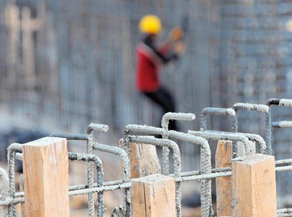

Real Chubut - Agencia de Noticias


Indec: el nivel de actividad económica retrocedió un 1,3% en el primer semestre

El nivel de actividad económica retrocedió debido al magro desempeño del sector fabril, la construcción y el consumo interno, informó este jueves el instituto nacional de estadística y censos.
El organismo volvió a difundir luego de ocho meses de reelaboración de las estadísticas, la variación del Estimador Mensual de la Actividad Económica (Emae) de junio y el acumulado del primer semestre, un registro que reúne a varios de los componentes que integran el PBI.
El Emae de julio presentó una merma del 4,3% en comparación a la de igual mes del año pasado, marcando así la baja interanual más pronunciada desde octubre del 2014, al tiempo que retrocedió el 0,3% en relación a mayo.
El presidente del Banco Central de la República Argentina (BCRA), Federico Sturzenegger, informó a mediados de julio que el PBI cayó 0,9% en el segundo trimestre, respecto a igual período del año pasado, por lo que la economía sigue en recesión desde septiembre de 2015.
Sturzenegger también dijo que en el segundo trimestre la caída del PBI fue del 0,3% en relación al primer trimestre.
"Este gobierno heredó una economía en recesión, que comenzó en septiembre del año pasado y no soy yo quien lo dice sino que surge de las estadísticas del Indec", explicó Sturzenegger durante una rueda de prensa.
El Indec corrigió las cifras del PBI, tomando como base los datos económicos del 2004, cuando todavía no habían comenzado a manipularse las estadísticas, e informó que la economía argentina creció 2,5 por ciento en 2015.
Sin embargo, el PBI bajó 0,1 % en el tercer trimestre de ese año en relación al segundo trimestre (un virtual estancamiento), mientras que en el cuarto trimestre se retrajo 0,4 % respecto del tercero.
Además, en el primer trimestre de este año, el PBI bajó 0,7 % respecto al último del 2015, lo que marcó tres trimestres consecutivos de bajas.
No obstante, a nivel interanual, el período enero-marzo de este año estuvo un 0,5 % por sobre la marca del primer trimestre del año pasado.
En este marco, el Indec dio cuenta de que la actividad industrial de junio presentó una caída de 6,4 % con respecto al mismo mes de 2015, y acumuló una baja del 3,3 % en el primer semestre del año.
En tanto, la construcción presentó en junio una baja del 19,6 % con respecto a igual mes del año anterior, por lo que acumuló un retroceso del 12,4 % durante el primer semestre.
Por el lado del consumo, las ventas de los supermercados mayoristas descendieron 3 % a nivel nacional en el primer semestre de este año, en comparación con el mismo período del anterior, pero en la Capital y sus alrededores subieron 4 por ciento, según datos difundidos por el titular de la Cámara de Distribuidores Mayoristas de Alimentos y Bebidas (Cadam), Alberto Guida.
"El consumo total a nivel nacional cayó 3 % en el primer semestre. En el canal mayorista en el interior del país el consumo fue estable, mantuvo sus volúmenes, pero en la Capital creció 4 %", describió el directivo en diálogo con Télam.
Un relevamiento de la consultora especializada CCR indicó que durante el primer semestre las ventas en los supermercados retrocedieron un 4,1 por ciento en las provincias, frente a un 0,4 por ciento en Capital Federal.
Según esta misma medición interanual, en Capital Federal los precios subieron 28,9 %, mientras que en las provincias lo hicieron 33,1 %.
Esta onda declinante no alcanzó al comercio exterior que, durante el primer semestre del año, mostró un aumento del 8 % en las cantidades exportadas, y del 9,1 % en las importaciones, pero en un contexto de fuerte retroceso de los precios.
Así, la balanza comercial arrojó un superávit de u$s 479 millones, frente al déficit de u$s 483 millones de enero-junio del 2015, según el Indec.
En el sector agropecuario también se observó un incremento en la actividad, que se tradujo en un aumento del 68 por ciento en la facturación por las ventas de maquinaria destinada a esa actividad, de acuerdo con los datos oficiales.
Otra muestra fue el balance del conglomerado "Molinos Río de la Plata", con un crecimiento en sus exportaciones que llevaron a que ganara en el semestre 1.088 millones de pesos, equivalentes a una mejora de 78 % respecto de mismo tramo de 2015.
De manera más genérica, el presidente de la Sociedad Rural Argentina (SRA), Luis Miguel Etchevere, destacó que las medidas llevadas adelante por el presidente Mauricio Macri "se vieron retribuidas con una mayor inversión en buena parte de las actividades productivas del país".
"Vemos que a partir de ahí se ha incrementado el área de siembra de trigo, sabemos que va a haber un incremento importante en la de maíz y de girasol, vemos que hay retención de vientres a partir de que bajó el porcentaje de la faena de hembras, y también aumentó la venta de insumos, de semillas, de fertilizantes, entre otras", señaló Etchevehere en declaraciones a la prensa.
Por otra parte, la actividad del sector financiero continuó con la tendencia ascendente que registró en en los últimos años y mostró importantes ganancias en los balances de los bancos.
El Banco Macro declaró ganancias de $ 1.800 millones en el segundo trimestre, un 119 % más en la comparación interanual; y Banco Francés embolsó 963 millones de pesos, 44,4 % por encima en relación al mismo período de 2015.